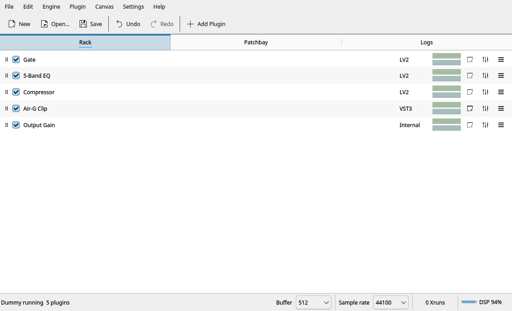
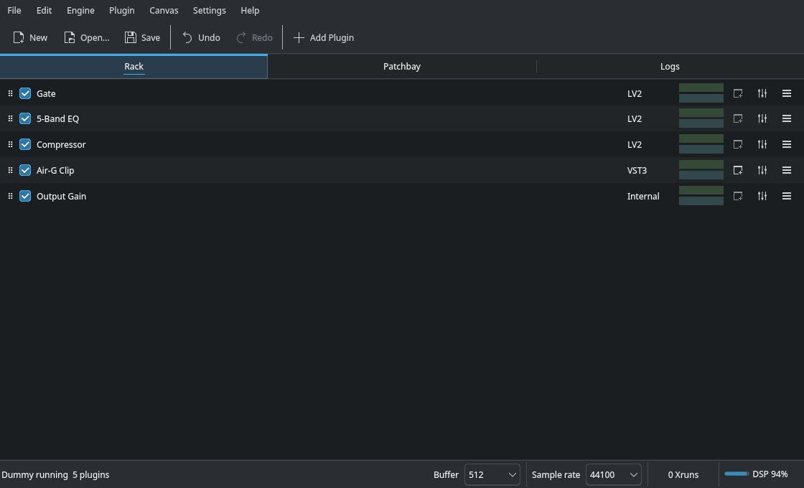
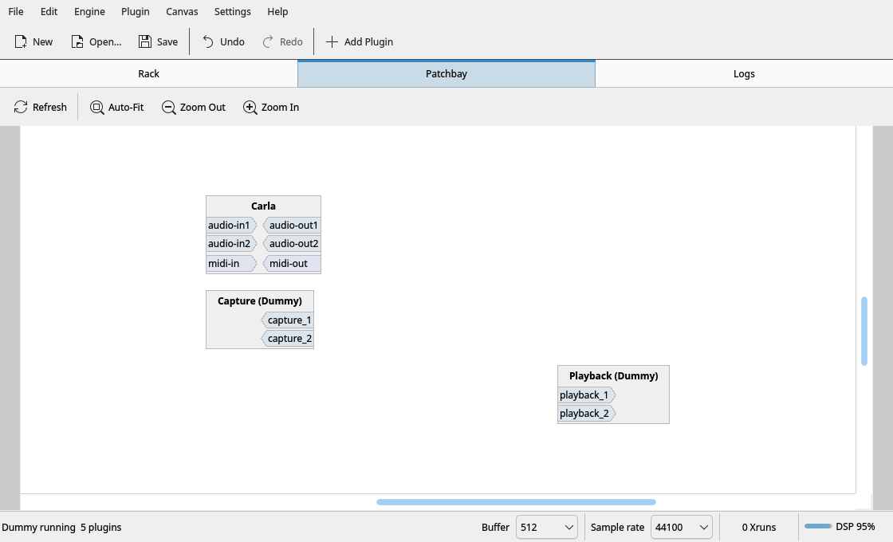
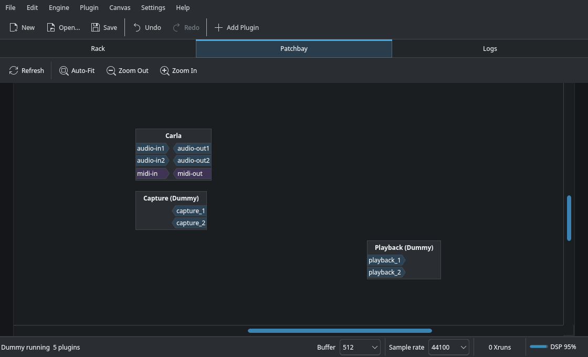

Franca
v2.6.0-alpha1A rack-based audio plugin host for Linux. Load your plugins, arrange a signal chain and process system audio through PipeWire or JACK without running a DAW.
Forked from Carla, keeping its audio engine and plugin bridges while introducing a native Rust and Qt 6 / KDE Kirigami interface.
- Platform
- Linux (Arch / KDE Plasma)
- Interface
- Rust + Qt 6 / Kirigami
- Routing
- PipeWire / JACK, ALSA, Pulse
- Formats
- LV2, VST3, VST2, CLAP, LADSPA, DSSI, JSFX, SF2/SFZ
- Projects
- .carxp & .carxs compatible
- Licence
- GPL-2.0-or-later


Architecture & capabilities
Built around two views — a top-to-bottom stereo rack for processing and a modular patchbay for wiring into the rest of the system audio graph.
Rack-based signal chain
Plugins run top to bottom in a continuous stereo rack. Reorder slots by dragging, toggle bypass without cutting audio, inspect per-plugin peak meters with 0 dB clip warnings, and open parameter editors or native plugin GUIs directly from each row.
Systemwide audio routing
The patchbay tab exposes your PipeWire or JACK graph alongside the rack so you can route a hardware microphone into a virtual microphone sink or process desktop playback. Includes left-to-right auto-arrange, zoom/fit controls and undo/redo for cable edits.
Native & Wine plugins
Supports native Linux LV2, VST3, VST2, CLAP, LADSPA, DSSI, JSFX, SF2/SF3, SFZ and Carla's internal plugins. Optional 64-bit and 32-bit Wine bridges host Windows plugins alongside native ones, with exit-handling fixes for third-party static destructor crashes.
Native KDE Plasma UI
The default franca-ui frontend is written in Rust and Qt 6 / Kirigami so
it follows your desktop theme, font rendering and file dialogs. A bounded rotating session
log tab captures warnings and bridge output without getting in the way.
Carla project compatibility
Opens and saves standard .carxp projects and .carxs presets.
Franca shares Carla's settings namespace and default JACK client name so existing plugin
search paths, devices and routes carry over.


Installation
Built from source on Arch Linux. Requires a C/C++ toolchain, Make, pkg-config, Qt 6, KDE Kirigami and Rust/Cargo.
make features first to inspect detected formats
git clone https://github.com/D35P4C1T0/Franca.git
cd Franca
make -j"$(nproc)"
make rust-uiwinegcc)
make -j"$(nproc)" win64 CC=x86_64-w64-mingw32-gcc CXX=x86_64-w64-mingw32-g++ AR=x86_64-w64-mingw32-ar
make wine64pw-jack to select PipeWire's JACK library explicitly
make install PREFIX="$HOME/.local"
pw-jack "$HOME/.local/bin/franca" project.carxpAbout this fork
Why Franca exists, how it differs from upstream Carla and where credit is due.
Carla is the foundation this project stands on, and for a full modular studio environment it remains the right tool. Franca started because my own day-to-day setup was much narrower and kept running into friction:
-
01
Crashes and sluggishness. Upstream Carla crashed frequently in my setup and felt slow during normal interaction. Rewriting the frontend in Rust with Qt 6 and fixing engine shutdown edge cases made routine use steadier and quicker.
-
02
Visual mismatch with the desktop. The custom skin never fit alongside native KDE Plasma applications. Franca delegates appearance to Qt 6 and Kirigami so it matches the rest of the desktop environment.
-
03
Plugin segfaults. Specific plugins caused crashes and segfaults, particularly during bridge teardown. Franca hardens bridge exit paths, writes bounded rotating session logs and prompts to save a recovered copy when a project opens with missing plugins.
-
04
A smaller, more focused scope. Franca is not meant to replace Carla. If you need remote OSC control, multi-client JACK sessions or a plugin-in-plugin host, use Carla. Franca is a slimmer host focused on running a reliable effect rack and wiring it into PipeWire/JACK.
Franca is a fork of Carla by Filipe Coelho (falkTX) and the KXStudio contributors. It retains Carla's audio engine, plugin bridges and GNU General Public License, version 2 or later. Bug reports and patches are welcome on the GitHub issue tracker.